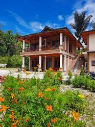

1. Bagus Bay Guest House
Bagus Bay Homestay menawarkan akomodasi dengan area tempat duduk di Tuk Tuk. Guest house ini menyediakan parkir pribadi gratis, keamanan sepanjang hari, dan Wi-Fi gratis. Akomodasi ini menyediakan kamar keluarga dan teras. Setiap unit di guest house ini dilengkapi dengan seprai dan handuk. Anda dapat bersantap di restoran hotel yang ramah keluarga, yang buka untuk makan malam, brunch, dan koktail. Anda dapat bermain biliar di guest house. Anda juga dapat bersantai di taman.

9 mins
2.Juma Cottages
Juma cottage adalah sebuah guest house ramah lingkungan yang terletak di Tuk Tuk, dan memiliki taman. Terdapat restoran di tempat dan parkir pribadi gratis. Di guest house, unit-unitnya dilengkapi dengan balkon. Unit-unitnya dilengkapi dengan kamar mandi pribadi dan teko, sementara beberapa kamar dilengkapi dengan teras dan yang lainnya juga memiliki pemandangan pegunungan.
3. My Nasha
Nasha tigaras simalungun saya terletak di daerah tigaras-simalungun hotel ini terletak 5 menit dari pelabuhan tigaras. Terdapat beberapa tempat menarik di sekitarnya, seperti bukit indah simarjarunjung yang berjarak sekitar 1,38 km. nasha tigaras saya adalah tempat menginap sempurna yang menyediakan fasilitas layak serta layanan hebat. bersenang-senanglah dengan berbagai fasilitas hiburan untuk Anda dan seluruh keluarga di nasha tigaras saya, akomodasi luar biasa untuk liburan keluarga Anda Meja depan 24 jam tersedia untuk melayani Anda, mulai dari check-in hingga check-out, atau bantuan apa pun yang Anda perlukan. jika Anda menginginkan lebih, jangan ragu untuk bertanya di meja depan. kami selalu siap mengakomodasi Anda. nashs tigaras saya adalah pilihan ideal bagi Anda yang mencari kenyamanan.
4.Darma Agung Beach Hotel
Darma Agung Beach Hotel, mewarkan berbagai fasilitas dan kenyamanan. Kamar tamu menawarkan fasilitas seperti kulkas, dan tamu dapat terhubung dengan internet menggunakan akses internet yang ditawarkan oleh hotel. Darma Agung Beach Hotel menawarkan layanan kamar dan layanan concierge, sehingga pengalaman menginap Anda lebih menyenangkan. Properti ini juga menawarkan restoran di tempat. Jika Anda suka makanan Asia, Darma Agung Beach Hotel terletak dekat Restoran Istana Minang, LaToSu Cafe & Resto, dan WinTie Coffee Shop. Staf di Darma Agung Beach Hotel berharap dapat melayani Anda selama kunjungan Anda mendatang.
5. Judita Cottage
Menghadap ke tepi laut, Judita Cottage adalah guest house yang menyediakan akomodasi bintang 2 di Tuk Tuk. Hotel ini memiliki area pantai pribadi, kolam renang outdoor, dan tempat parkir di areanya. Akomodasi ini menampilkan pemandangan gunung dan danau. Akomodasi ini menyediakan resepsionis 24 jam, antar-jemput bandara, dapur bersama, dan Wi-Fi gratis. Beberapa akomodasi memiliki teras dan TV satelit layar datar, serta area tempat duduk. Semua unit di guest house ini memiliki kamar mandi pribadi. Guest house ini menyajikan sarapan ala Amerika dan Asia, dan sarapan di kamar juga tersedia. Terdapat sebuah kedai kopi, dan makan siang kemasan juga tersedia. Anda dapat bermain tenis meja di Judita Cottage. Layanan penyewaan sepeda dan mobil tersedia di akomodasi, sementara bersepeda dan memancing dapat dinikmati di dekatnya.
6.OYO 2379 Hotel Sibigo
TLakukan perjalanan terbaik Anda ke Samosir dengan standar Sanitized Stays yang dijanjikan, dan nikmati Wi-Fi gratis di semua kamar. Berlokasi strategis di Samosir bagian Barat Samosir, properti ini menempatkan Anda dekat dengan atraksi dan pilihan tempat makan yang menarik. Sebagai bonus tambahan, restoran disediakan di lokasi untuk melayani kebutuhan Anda dengan nyaman.
7. Toledo Inn
Toledo Inn memiliki taman, teras, restoran, dan bar di Tuk Tuk. Wi-Fi gratis dan layanan kamar juga disediakan. Setiap kamar di hotel ini dilengkapi dengan lemari pakaian. Setiap kamar memiliki kamar mandi pribadi dengan shower, sementara kamar-kamar tertentu memiliki balkon dan yang lainnya juga menampilkan pemandangan pegunungan. Di Toledo Inn, kamar-kamarnya mencakup meja dan TV layar datar. Pilihan sarapan Asia dan halal tersedia setiap hari di akomodasi. Bandara terdekat adalah Bandara Internasional Sisingamangaraja XII, 130 km dari Toledo Inn.
8. Tabo Cottages Tuktuk Lake Toba
Tabo Cottages adalah hotel yang natural dengan pekarangan hijau yang luas dan kamar sebahagian dari bahan daurulang dari rumah tradisional. Di pekarangan kita ada beberapa pondok untuk santai dan menikmati pemandangan danau dan gunung. Restoran dan bakery jerman sangat terkenal. Makanan spesial adalah prasmanan dengan khas lokal dan barat. Kopi adalah salah satu produk yang sangat kami banggakan karena kami memanggang biji kopi lokal sendiri, maka kopi di Tabo sangat segar dan harum. Kami perhatikan konsep bisnis berkelanjutan (sustainable) dan menjaga linkungan, hemat energi dan juga kami edukasi orang pribumi menjadi staf hotel yang berkualitas. Sering juga kami adakan aksi linkungan bersama tamu2 dan coba memperbaiki linkungan dan fasilitas seperti jalur treking secara relawan.